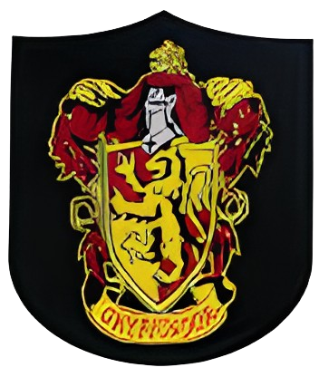
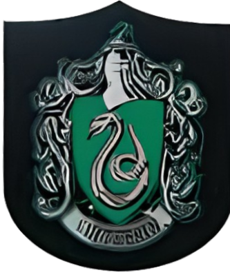
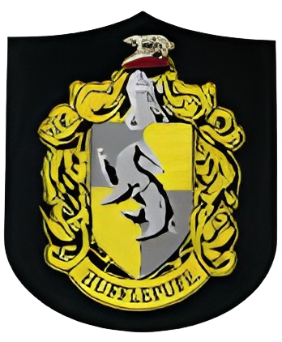
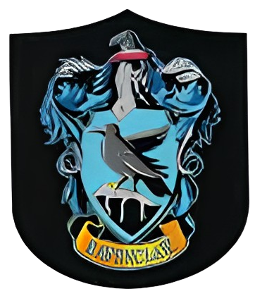

Bem-vindo a Hogwarts
Olá bruxos e bruxas, sejam bem-vindos a escola de magias e bruxarias de Hogwarts, onde será ensinado sobre magias basicas, criação de poções, jogos de bruxos, Herbologia, domação de animais e defesa contra magias negras

ㅤ
ㅤ
Gryffindor - (Grifinória)
Representativo:
Coragem, Ousadia, Bravura e Cavalheirismo.
Chefe de casa:
Profª Minerva McGonagall.
Fundador:
Godric Gryffindor.

História da casa:
Seu criador Godric Gryffindor, acreditava que essas qualidades eram essenciais para enfrentar o perigo, defender oque é certo e proteger os outros. Por isso, ele queria que sua casa fosse um lugar onde alunos ousados e determinados pudessem se desenvolver.
Além disso dentro de Hogwarts cada fundador criou sua casa com propóstio diferente. No caso de Grifinória, o objetivo era:
ㅤ
Slytherin - (Sonserina)
Representativo:
Ambição, Astúcia, Liderança e Determinação.
Chefe de casa:
Profº Severo Snape.
Fundador:
Salazar Slytherin.

História da casa:
Seu fundador Salazar Slytherin, acreditava que essas qualidades eram essenciais para alcnçar grandeza. Porém, ele também defendia que a escola Hogwarts deveria aceitar apenas bruxos de sangue puro, oque causou conflito com outros fundadores.
Os principais objetivos da Sonserina são:
ㅤ
Hufflepuff - (Lufa-Lufa)
Representativo:
Lealdade, Paciência, Justiça e Trabalho árduo.
Chefe de casa:
Profª Pomona Sprout.
Fundador:
Helga Hufflepuff.

História da casa:
Enquanto alguns fundadores eram mais seletivos, Helga Hufflepuff acreditava que todos os alunos mereciam uma chance, independentemente de talento natural ou origem. Por isso, ela criou a Lufa-Lufa como uma casa acolhedora, que aceita estudantes diversos.
Os principais objetivos da Lufa-Lufa são:
ㅤ
Ravenclaw - (Corvinal)
Representativo:
Inteligência, Sabedoria, Curiosidade, Sagacidade e Criatividade.
Chefe de casa:
Filius Flitwick.
Fundador:
Rowena Ravenclaw.

História da casa:
Rowena Ravenclaw acreditava que o mais importante em um bruxo era a mente: criatividade, lógica e curiosidade. Por isso, ela criou sua casa para reunir os alunos que gostassem de aprender, pensar e explorar novas ideias.
Os principais objetivos da Corvinal são: